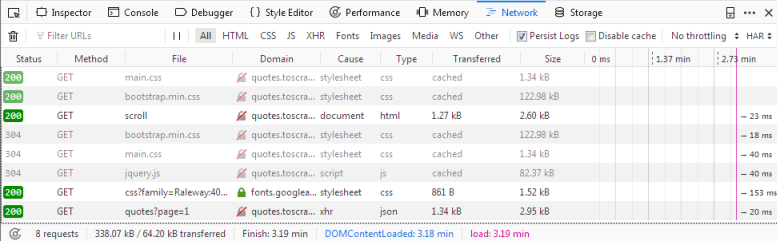

Using your browser’s Developer Tools for scraping¶
Here is a general guide on how to use your browser’s Developer Tools to ease the scraping process. Today almost all browsers come with built in Developer Tools and although we will use Firefox in this guide, the concepts are applicable to any other browser.
In this guide we’ll introduce the basic tools to use from a browser’s Developer Tools by scraping quotes.toscrape.com.
Caveats with inspecting the live browser DOM¶
Since Developer Tools operate on a live browser DOM, what you’ll actually see
when inspecting the page source is not the original HTML, but a modified one
after applying some browser clean up and executing Javascript code. Firefox,
in particular, is known for adding <tbody> elements to tables. Scrapy, on
the other hand, does not modify the original page HTML, so you won’t be able to
extract any data if you use <tbody> in your XPath expressions.
Therefore, you should keep in mind the following things:
Disable Javascript while inspecting the DOM looking for XPaths to be used in Scrapy (in the Developer Tools settings click Disable JavaScript)
Never use full XPath paths, use relative and clever ones based on attributes (such as
id,class,width, etc) or any identifying features likecontains(@href, 'image').Never include
<tbody>elements in your XPath expressions unless you really know what you’re doing
Inspecting a website¶
By far the most handy feature of the Developer Tools is the Inspector feature, which allows you to inspect the underlying HTML code of any webpage. To demonstrate the Inspector, let’s look at the quotes.toscrape.com-site.
On the site we have a total of ten quotes from various authors with specific tags, as well as the Top Ten Tags. Let’s say we want to extract all the quotes on this page, without any meta-information about authors, tags, etc.
Instead of viewing the whole source code for the page, we can simply right click
on a quote and select Inspect Element (Q), which opens up the Inspector.
In it you should see something like this:

The interesting part for us is this:
<div class="quote" itemscope="" itemtype="http://schema.org/CreativeWork">
<span class="text" itemprop="text">(...)</span>
<span>(...)</span>
<div class="tags">(...)</div>
</div>
If you hover over the first div directly above the span tag highlighted
in the screenshot, you’ll see that the corresponding section of the webpage gets
highlighted as well. So now we have a section, but we can’t find our quote text
anywhere.
The advantage of the Inspector is that it automatically expands and collapses
sections and tags of a webpage, which greatly improves readability. You can
expand and collapse a tag by clicking on the arrow in front of it or by double
clicking directly on the tag. If we expand the span tag with the class=
"text" we will see the quote-text we clicked on. The Inspector lets you
copy XPaths to selected elements. Let’s try it out: Right-click on the span
tag, select Copy > XPath and paste it in the scrapy shell like so:
$ scrapy shell "http://quotes.toscrape.com/"
(...)
>>> response.xpath('/html/body/div/div[2]/div[1]/div[1]/span[1]/text()').getall()
['"The world as we have created it is a process of our thinking. It cannot be changed without changing our thinking.”]
Adding text() at the end we are able to extract the first quote with this
basic selector. But this XPath is not really that clever. All it does is
go down a desired path in the source code starting from html. So let’s
see if we can refine our XPath a bit:
If we check the Inspector again we’ll see that directly beneath our
expanded div tag we have nine identical div tags, each with the
same attributes as our first. If we expand any of them, we’ll see the same
structure as with our first quote: Two span tags and one div tag. We can
expand each span tag with the class="text" inside our div tags and
see each quote:
<div class="quote" itemscope="" itemtype="http://schema.org/CreativeWork">
<span class="text" itemprop="text">
“The world as we have created it is a process of our thinking. It cannot be changed without changing our thinking.”
</span>
<span>(...)</span>
<div class="tags">(...)</div>
</div>
With this knowledge we can refine our XPath: Instead of a path to follow,
we’ll simply select all span tags with the class="text" by using
the has-class-extension:
>>> response.xpath('//span[has-class("text")]/text()').getall()
['"The world as we have created it is a process of our thinking. It cannot be changed without changing our thinking.”,
'“It is our choices, Harry, that show what we truly are, far more than our abilities.”',
'“There are only two ways to live your life. One is as though nothing is a miracle. The other is as though everything is a miracle.”',
(...)]
And with one simple, cleverer XPath we are able to extract all quotes from
the page. We could have constructed a loop over our first XPath to increase
the number of the last div, but this would have been unnecessarily
complex and by simply constructing an XPath with has-class("text")
we were able to extract all quotes in one line.
The Inspector has a lot of other helpful features, such as searching in the source code or directly scrolling to an element you selected. Let’s demonstrate a use case:
Say you want to find the Next button on the page. Type Next into the
search bar on the top right of the Inspector. You should get two results.
The first is a li tag with the class="text", the second the text
of an a tag. Right click on the a tag and select Scroll into View.
If you hover over the tag, you’ll see the button highlighted. From here
we could easily create a Link Extractor to
follow the pagination. On a simple site such as this, there may not be
the need to find an element visually but the Scroll into View function
can be quite useful on complex sites.
Note that the search bar can also be used to search for and test CSS
selectors. For example, you could search for span.text to find
all quote texts. Instead of a full text search, this searches for
exactly the span tag with the class="text" in the page.
The Network-tool¶
While scraping you may come across dynamic webpages where some parts of the page are loaded dynamically through multiple requests. While this can be quite tricky, the Network-tool in the Developer Tools greatly facilitates this task. To demonstrate the Network-tool, let’s take a look at the page quotes.toscrape.com/scroll.
The page is quite similar to the basic quotes.toscrape.com-page,
but instead of the above-mentioned Next button, the page
automatically loads new quotes when you scroll to the bottom. We
could go ahead and try out different XPaths directly, but instead
we’ll check another quite useful command from the scrapy shell:
$ scrapy shell "quotes.toscrape.com/scroll"
(...)
>>> view(response)
A browser window should open with the webpage but with one
crucial difference: Instead of the quotes we just see a greenish
bar with the word Loading....
{kind=link}
The view(response) command let’s us view the response our
shell or later our spider receives from the server. Here we see
that some basic template is loaded which includes the title,
the login-button and the footer, but the quotes are missing. This
tells us that the quotes are being loaded from a different request
than quotes.toscrape/scroll.
If you click on the Network tab, you will probably only see
two entries. The first thing we do is enable persistent logs by
clicking on Persist Logs. If this option is disabled, the
log is automatically cleared each time you navigate to a different
page. Enabling this option is a good default, since it gives us
control on when to clear the logs.
If we reload the page now, you’ll see the log get populated with six new requests.
{kind=link}
Here we see every request that has been made when reloading the page and can inspect each request and its response. So let’s find out where our quotes are coming from:
First click on the request with the name scroll. On the right
you can now inspect the request. In Headers you’ll find details
about the request headers, such as the URL, the method, the IP-address,
and so on. We’ll ignore the other tabs and click directly on Reponse.
What you should see in the Preview pane is the rendered HTML-code,
that is exactly what we saw when we called view(response) in the
shell. Accordingly the type of the request in the log is html.
The other requests have types like css or js, but what
interests us is the one request called quotes?page=1 with the
type json.
If we click on this request, we see that the request URL is
http://quotes.toscrape.com/api/quotes?page=1 and the response
is a JSON-object that contains our quotes. We can also right-click
on the request and open Open in new tab to get a better overview.

With this response we can now easily parse the JSON-object and also request each page to get every quote on the site:
import scrapy
import json
class QuoteSpider(scrapy.Spider):
name = 'quote'
allowed_domains = ['quotes.toscrape.com']
page = 1
start_urls = ['http://quotes.toscrape.com/api/quotes?page=1]
def parse(self, response):
data = json.loads(response.text)
for quote in data["quotes"]:
yield {"quote": quote["text"]}
if data["has_next"]:
self.page += 1
url = "http://quotes.toscrape.com/api/quotes?page={}".format(self.page)
yield scrapy.Request(url=url, callback=self.parse)
This spider starts at the first page of the quotes-API. With each
response, we parse the response.text and assign it to data.
This lets us operate on the JSON-object like on a Python dictionary.
We iterate through the quotes and print out the quote["text"].
If the handy has_next element is true (try loading
quotes.toscrape.com/api/quotes?page=10 in your browser or a
page-number greater than 10), we increment the page attribute
and yield a new request, inserting the incremented page-number
into our url.
You can see that with a few inspections in the Network-tool we were able to easily replicate the dynamic requests of the scrolling functionality of the page. Crawling dynamic pages can be quite daunting and pages can be very complex, but it (mostly) boils down to identifying the correct request and replicating it in your spider.